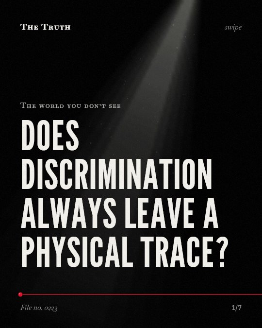

The world you don’t see
Does discrimination always leave a physical trace?

The link between discrimination and allostatic load is inconsistent.
Studies show mixed results. Some groups show no significant link between discrimination and physical stress markers.
Established. Several studies combined, or official data. The evidence is mixed.
What the research found
Feeling obligated to present an image of strength and an obligation to suppress emotions were each protective against the health risk associated with experiencing racial discrimination.
“Feeling obligated to present an image of strength and an obligation to suppress emotions were each protective whereas feeling an intense motivation to succeed and feeling an obligation to help others exacerbated the independent health risk associated with experiencing racial discrimination.”
Study, 2019. Allen et al., Annals of the New York Academy of Sciences.
The racial discrimination to allostatic load link was not significant for young adults who received high emotional support.
“The racial discrimination to AL link was not significant for young adults who received high emotional support.”
Observational study, 2014. Brody et al., Child Development.
Adolescents in the high and stable perceived discrimination class evinced heightened allostatic load even with confounder variables controlled.
“Adolescents in the high and stable class evinced heightened AL even with confounder variables controlled.”
Observational study, 2014. Brody et al., Child Development.
Greater allostatic load is linked to poorer health outcomes in both clinical and non-clinical pediatric populations.
“The findings indicate that greater allostatic load is associated with poorer health outcomes in both clinical and non-clinical pediatric populations, with possible enduring effects.”
Systematic review, 2023. Lucente & Guidi, Psychotherapy and Psychosomatics.
Context shapes the physical impact.
Age, demographic groups, and individual coping mechanisms like emotional support or suppressed emotions change how discrimination affects the body.
Your internal defenses matter.
That may be why some people experience higher physical stress from discrimination while others do not. Your personal support systems and emotional habits play a role.
This part is our reading of the evidence, not a finding.
A quiet commute.
You sit in a car or on a train, observing the world outside the window while maintaining a neutral expression for the people around you.
The honest summary
The evidence shows a complex and inconsistent relationship between discrimination and allostatic load, influenced by demographic groups, specific types of discrimination, and individual coping mechanisms.
The findings are highly heterogeneous and inconsistent, with some studies showing no significant association between discrimination and allostatic load.
What internal defenses are you using today?
Sources
- Marcella Lucente, Jenny Guidi (2023). Allostatic Load in Children and Adolescents: A Systematic Review. Psychotherapy and Psychosomatics. Systematic review, cited 60 times.
- Gene H. Brody, Man‐Kit Lei, David H. Chae et al. (2014). Perceived Discrimination Among African American Adolescents and Allostatic Load: A Longitudinal Analysis With Buffering Effects. Child Development. Observational study, cited 279 times.
- Amani M. Allen, Yijie Wang, David H. Chae et al. (2019). Racial discrimination, the superwoman schema, and allostatic load: exploring an integrative stress‐coping model among African American women. Annals of the New York Academy of Sciences. Study, cited 186 times.
Also read for this file, not quoted
- Harb et al. (2026). Discrimination and allostatic load in black middle-aged and older adults: A systematic review and meta-analysis.
- Harb et al. (2024). Unmasking Invisible Burdens: A Systematic Review on Perceived Discrimination and its Impact on Allostatic Load in Black Individuals.
- Vadiveloo & Mattei (2016). Perceived Weight Discrimination and 10-Year Risk of Allostatic Load Among US Adults.
This file was researched and drafted by software, then checked by rules a model cannot talk its way around: each quote above was matched word for word against the paper, and every number had to appear in it. How files are made.